Algebra di Bool
1 Algebra e circuiti elettrici
I computer operano con segnali elettrici con valori di potenziale discreti.
- sono considerati significativi soltanto due potenziali high / Low
- I potenziali intermedi, che si verificano durante le transizioni di potenziale, non vengono considerati.
L’aritmetica binaria è stata adottata proprio perché i bit sono rappresentabili naturalmente tramite elementi elettronici in cui siamo in grado distinguere i 2 stati di potenziale elettronico ( High / Low)
Il funzionamento dei circuiti elettronici può essere modellato tramite l’algebra di Boole
- Solo 2 valori:
- Valore TRUE (1 o asserted) → livello di potenziale ALTO
- Valore FALSE (0 o deasserted) → livello di potenziale BASSO
- Operazioni logiche Booleane: SOMMA (OR), PRODOTTO (AND), INVERSIONE LOGICA (NOT)
- OR \((A + B)\): risultato uguale ad 1 (TRUE) se almeno un input è 1 (TRUE)
- AND \((A \times B)\): risultato uguale ad 1 (TRUE) solo se tutti gli input sono 1 (TRUE)
- NOT \(( \sim A)\): risultato uguale all’inverso dell’input \((0 \rightarrow 1\; oppure\; 1 \rightarrow 0)\)
2 Blocco logico
- Circuito elettronico con linee (fili) in input e output
- possiamo associare variabili logiche con le varie linee in input/output
- Il circuito calcola una o più funzioni logiche, ciascuna espriminile tramite una
combinazione di operazioni dell’algebra di Boole sulle variabili in input
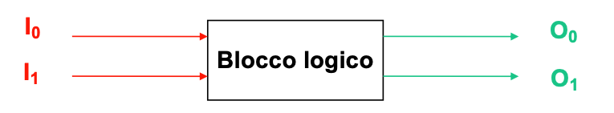
3 Circuiti combinatori/sequenziali
Circuiti combinatorio
- Senza elementi di memoria - produce output che dipeende funzionalmente solo dall’input
Circuiti sequenziali
- Con elementi di memoria - produce output che dipende non solo dall’input ma anche dallo stato della memoria
4 Funzioni Logiche
Una funzione logica è completamente specificata da
- Una tabella di verità
- Una equazione logica
4.1 Tabelle di Verità
Dati n input bit, il numero di configurazione possibili degli input, ovvero il numero di righe della Tabella di verità, + \(2^n\)
- Per ogni bit in output, la tabella contiene una colonna, con un valore definito per ognuna
combinazione dei bit in input
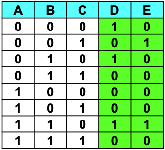
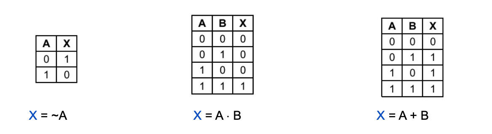
4.2 Proprietà dell’algebra di Boole
Proprietà:
- Identità:
- OR: \(A + 0 = A\)
- AND: \(A \times 1 = A\)
- Nullo:
- OR: \(A + 1 = 1\)
- AND: \(A \times 0 = 0\)
- Idempotente:
- OR: \(A + A = A\)
- AND: \(A \times A = A\)
- Inverso:
- OR: \(A + ( \sim A) = 1\)
- AND: \(A \times ( \sim A) = 0\)
- Commutativa:
- OR: \(A + B = B + A\)
- AND: \(A \times B = B \times A\)
- Associativa:
- OR: \(A + (B + C) = (A + B) + C\)
- AND: \(A \times (B \times C) = (A \times B) \times C\)
- Distributiva:
- OR: \(A \times (B + C) = (A \times B) + (A \times C)\)
- AND: \(A + (B \times C) = (A + B) \times (A + C)\)
- DeMorgan:
- OR: \(\sim (A + B) = ( \sim A) \times ( \sim B)\)
- AND: \(\sim (A \times B) = ( \sim A) + ( \sim B)\)
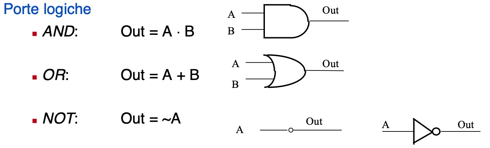
4.3 NAND e NOR
NAND (inverso dell’operazione AND): \(\sim (A \times B) = A\) nand \(B\\\)
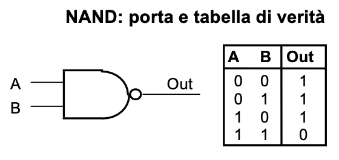
NOR (inverso dell’operazione OR): \(\sim (A + B) = A\) nor \(B\)
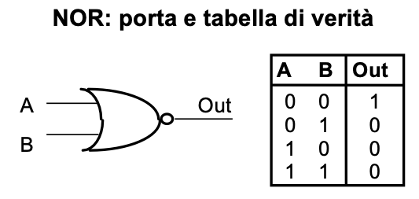
5 Porte logiche e transistor
Tecnologia CMOS (Complementary Metal Oxide Semiconductor) per realizzare transistor in sul silicio
- I transistor sono degli interruttori velocissimi che lasciano o meno passare la corrente, e sono comandati da un segnale elettrico
5.1 NMOS
N-Type Metal Oxide Semiconductor transistor
- Se applichi un ALTO voltaggio (Vdd), il transistor diventa un conduttore
- Se applichi un BASSO voltaggio (GND), il transistor interrompe la conduzione (resistenza infinita)
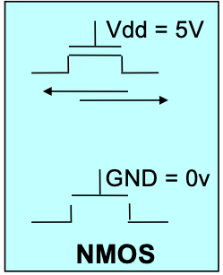
5.2 PMOS
P_Type Metal Oxide Semiconductor transistor
- Se applichi un ALTO voltaggio (Vdd), il transistor interrompe la conduzione (resistenza infinita)
- Se applichi un BASSO voltaggio (GND), il transistor diventa un conduttore
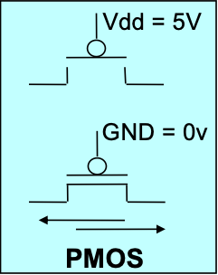
5.3 Confronto tra porte
Se i transistor PMOS sono più veloci:
- È meglio avere transistor PMOS in serie
- Porte NOR preferite
Se i transistor NMOS sono più veloci:
- È meglio avere transistor NMOS in serie
- Porte NAND preferite
5.4 Forma canonica
Ogni funzione logica può essere rappresentata come equazione logica o come tabella di verità Ogni equazione logica può essere scritta in forma canonica tramite l’uso degli operatori AND, OR, NOT.
Forma canonica SP (somma di prodotti)
- Per ogni valore uguale ad 1 nell’output genera un prodotto (mintermine) degli input A, B, C dove gli input uguali
a 0 appaiono negati.
Ciascun prodotto vale 1 solo per quella determinata riga e quei determinati fattori.
esempio: \(E = (\sim A \cdot B) + (B \cdot C)\)
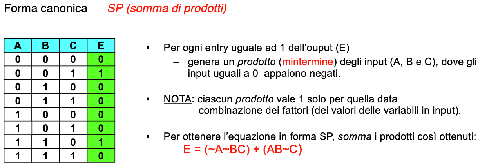
Forma canonica PS (prodotto di somme)
- Per ogni valore uguale ad 0 nell’output genera una somma (maxtermine) degli input A, B, C dove gli input uguali
a 1 appaiono negati.
Ciascuna somma vale 0 solo per quella determinata riga e quei determinati fattori.
esempio: \(E = (\sim A + B) \cdot (B + C)\)
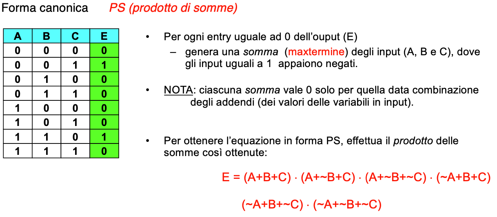
5.5 Dalla forma canonica ai circuiti
- Da una equazione logica espressa come somma di prodotti (SP) si realizza una funzione logica di n input e 1 output,
costituita da 2 livelli:
- Primo livello:
- numero di porte AND per ogni prodotto.
- arietà delle porte dipende dal numero di fattori dei prodotti, es. se un prodotto ha 2 fattori la funzione AND avrà 2 porte (arietà = 2).
- Secondo livello
- livello costituito da una porta OR per la somma.
- arietà della funzione OR dipende dal numero di prodotti.
- Primo livello:
5.6 Minimizzare
Scopo della minimizzazione:
- data un’equazione in forma normale, es. SP, si riduce il numero di prodotti oppure il numero di variabili coinvolte in ogni prodotto. Tale processo permette l’uso di meno porte, un’arietà ridotta dato il decremento delle variabili e un costo minore per il circuito.
Le variabili DON’T CARE non hanno importanza ai fini della definizione dell’equazione, tradotto sono quelle variabili che nel processo di minimizzazione (tipo mappa di Karnaught) non rimangono fisse.
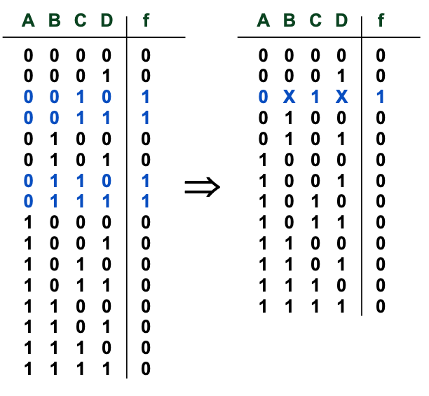
6 Tecniche di minimizzazione
Intuitivamente, per semplificare una tabella di verità di N variabili di input e minimizzare la corrispondente forma normale SP, ovvero per scoprire le variabili DON’T CARE, basta individuare:
- \(2^1\) (coppie di) righe con output 1 dove
- i valori assunti da N - 1 variabili appaiono fissi
- tutti i possibili valori di una variabile (X) appaiono combinati con gli altri N - 1 valori fissi \(\rightarrow\) la variabile X è DON’T CARE
- \(2^2\) (4-ple di) righe con output 1 dove
- i valori assunti da N - 2 variabili appaiono fissi
- tutti i possibili valori due variabili (X,Y) appaiono combinati con gli altri N - 2 valori fissi \(\rightarrow\) le variabili X e Y sono DON’T CARE
- \(2^3\) (8-ple di) righe con output 1 dove
- i valori assunti da N - 3 variabili appaiono fissi
- tutti i possibili valori di tre variabili (X,Y,Z) appaiono combinati con gli altri N - 3 valori fissi \(\rightarrow\) le variabili X, Y, Z sono DON’T CARE
- \(2^4\) (16-ple di) righe con output 1 dove …
7 Mappe di Karnaugh
Per minimizzare a mano funzioni di poche variabili, si possono rappresentare le tabelle di verità con le mappe di Karnaugh
- Ogni quadrato (cella) della mappa individua una combinazione di variabili in input
- il valore contenuto nel quadrato corrispondente al valore di output per quella particolare combinazione di variabili in input
- per convenzione nella mappa si inseriscono solo i valori uguali a 1
- da notare le combinazioni delle variabili in input che etichettiamo i due assi
delle mappe:
- Codice di Gray: differenza di un singolo bit tra combinazioni consecutive
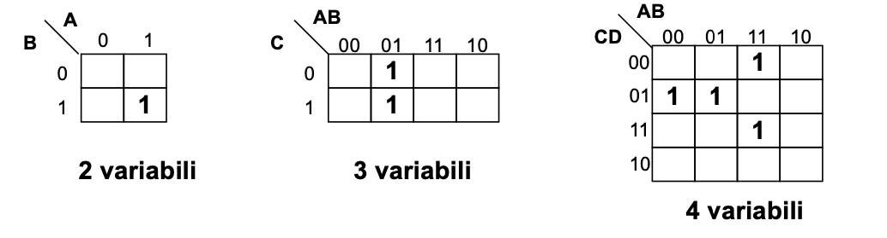
- Codice di Gray: differenza di un singolo bit tra combinazioni consecutive
7.1 Scopo delle mappe
- Individuare facilmente insieme di righe (\(2^1,\; 2^2,\; 2^3\;\) righe, ecc.) della tabella di varietà con variabili (1, 2, 3 variabili, ecc.) DON’T CARE
- Gli 1 corrispondono a queste righe risultano infatti adiacenti nella mappa corrispondente
- Nel considerare l’adiacenza delle celle nella mappa, si tengono conto che i bordi orizzontali/verticali della mappa è come se si toccassero
- Le combinazioni di \(2^1,\; 2^2,\; 2^3\) righe della tabella di verità originale con 1, 2, 3 variabili DON’T CARE diventano rettangoli di valori uguali ad 1 nella mappa di Karnaugh
- Questi rettangoli sono composti da \(2^p\) valori uguali ad 1, e sono anche noti con il termine di p-sottocubi
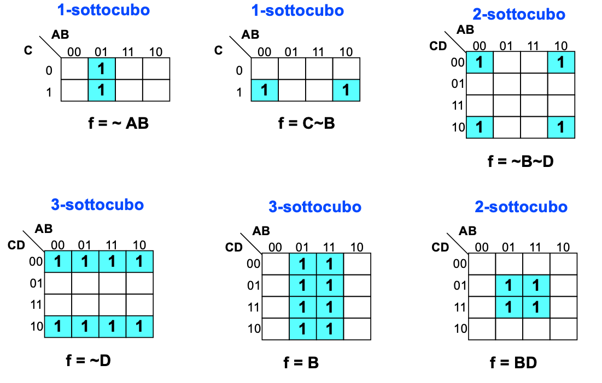
7.2 Minimizzare con mappe di Karnaugh
Per minimizzare il più possibile basta scegliere i più grandi rettangoli (p-sottocubi) che ricoprono gli 1 della mappa, alcuni 1 possono essere ricoperti da più rettangoli.
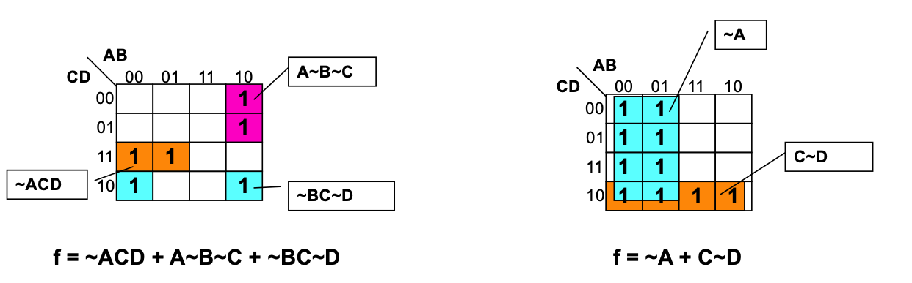
7.3 Ipercurbi e Meppe di Karnaugh
La mappa di Karnaugh è la rappresentazione tabellare di un grafo con topologia ad ipercubo:
- ogni nodo dell’ipercubo a n dimensioni è etichettato con un numero binario a n cifre.
- due nodi dell’ipercubo sono connessi se la loro etichetta differisce per un solo bit.
- i sottocubi si riferiscono a specifci sottoinsiemi di nodi connessi.
Riassumendo negli ipercubi le etichette dei nodi connessi differiscono di 1 solo bit (distanza di Hamming = 1).
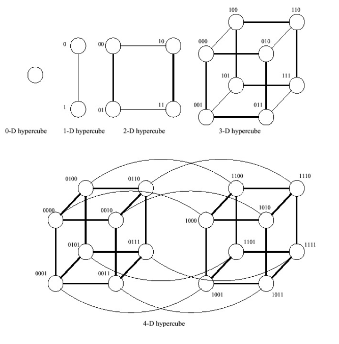
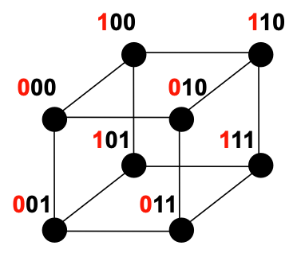
7.4 Funzioni incomplete
Alcuni output di una funzione, ovvero gli output corrispondendi a particolari configurazioni degli input, possono non interessare, per questo sono detti output DON’T CARE. Per esemopio nelle tabelle di verità o nelle mappe di Karnaugh possiamo avere degli X che stanno per DON’T CARE.
Problema
- L’equazione logica e il corrispodente circuito non possono essere incompleti, essi devono produrre un risultato in corrispondenza di tutte le combinazioni dei valori di input. Si sceglie di inserire nelle celle 1 o 0 per ottenere una migliore ottimizzazione, al posto che inserire una X.
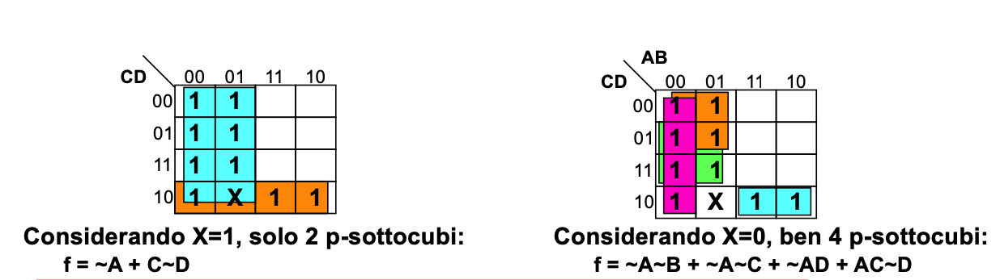
8 Algoritmo di Quine McCluskey
Le mappe di Karnaugh servono per la minimizzazione a mano delle funzioni, ma si riscono a rappresentare al massimo 5 variabili
Esiste un algoritmo detto Algoritmo di Quine - McCluskey che serve per sintetizzare funzioni logiche con più di 5 variabili in maniera automatica
9 George Boole (1815 - 1864)
Definisce lo strumento concettuale che sta alla base del funzionamento del calcolatore elettronico: l’algebra booleana
Nel suo libro del 1854 crea il legame tra logica e algebra. Il suo lavoro in vita fu considerato pura matematica.
Nel 1938 Claude Shannon dimostra che la logica simbolica di Boole può essere applicata per rappresentare le funzioni degli interruttori nei circuiti elettronici
10 Claude Shannon (1916 - 2001)
Nella sua tesi di master del 1938 dimostra che il fluire di un segnale elettrico attraverso una rete di interruttori segue le regole dell’algebra di Boole. Questo pone la base teorica dei sistemi di codificazione, elaborazione e trasmissione digitale dell’informazione.
Nel 1948 pubblica una ricerca sul problema di ricostruire, con un certo grado di certezza, le informazioni trasmesse da un mittente. In questa ricerca conia la parola “bit” per designare l’unità elementare d’informazione.
Nel 1949 pubblica uno studio che fonda la teoria matematica della crittografia.